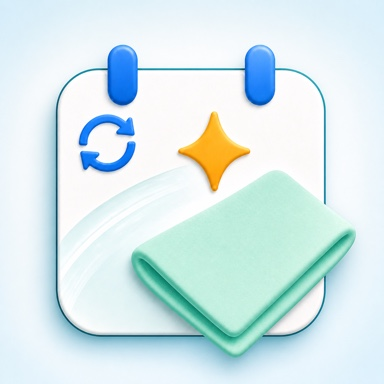

OsoujiAizu
You don't have to remember cleaning day.
Set a cycle for each cleaning task, and you'll get a notification on the day. Miss a day? Just choose a new one — the app never changes the cycle on its own. Spotted some grime mid-clean? Add it as a one-off task on the spot. No account, no ads.
iOS 18.0 or later / iPhone
Five tools for everyday cleaning
-
Run on a set cycle
Choose a cycle for each task: daily, a day of the week, every few days, every few weeks, or every few months. You can also count from the scheduled day or from the day you actually finished, so running late doesn't push everything after it. You'll get a notification on the day.
-
Miss a day, and you can still get back on track
Couldn't get to it? Skip it, do it tomorrow, pick a date, or mark it done. Only this one occurrence moves — the cycle itself never changes. Preview the new date before you confirm.
-
Add it the moment you spot it
Grime you notice mid-clean can go straight in as a one-off task for today or tomorrow. A name, a room, and a rough duration is all it takes, and it doesn't repeat once it's done — so things that don't deserve a cycle still don't get forgotten.
-
Never wonder what to do next
Keep steps, tools, cautions, photos, and history on every task. Register your tools once and you can search by them — "where do I use this cleaner again?" — or search by cycle, like "every Sunday".
-
See today, and what's coming
Switch the Today screen between today only and the week ahead. The calendar shows upcoming plans and finished records month by month. A task can only be completed once a day, and if you tap it by mistake you can undo it the same day.
Free covers 15 tasks and 10 schedules. There's no limit on the records you keep, and dark mode is free too. Pro removes the caps, unlocks five color themes, and adds export and import of your records.
Your cleaning records stay on your device
Your tasks, their steps, tools, cautions, cycles, photos, and cleaning records are stored only on your device. No account or sign-in is required, and none of this content is ever sent to our servers. See the Privacy Policy for details.
Forget it, and the cleaning keeps going.
Common questions are answered on the support page. Contact: tempuraapps.support@gmail.com